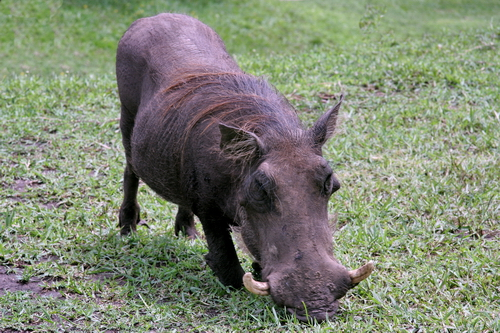

La forêt de Dida
DESCRIPTIONS DU SITE
La forêt de Dida comme son nom l'indique est une forêt tropicale. Elle constitue un reservoir naturel de faune et de flore.
Elle est située au sud-ouest du Burkina à proximité du lac de Tingrela et des dômes de Fabédougou.C'est une forêt clasée qui se démarque des autres par sa biodiversité riche
HISTORIQUE DU SITE
La forêt de Dida est une forêt protégée d'après les politiques de l'état Burkinabè au XXéme siècle.Ainsi elle bénéficie d'un statut juridique de protection pour lutter contre la déforestation et la coupe illégale de bois.